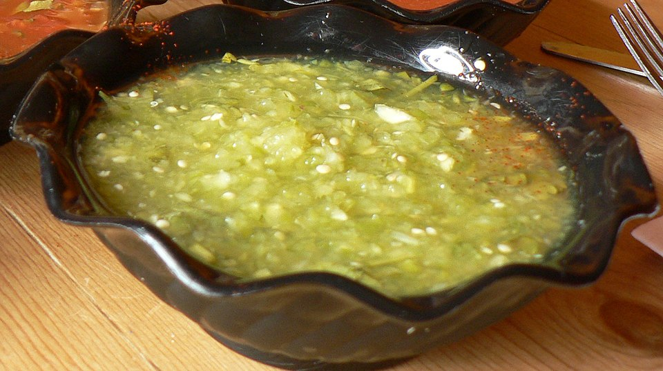

Home
Chips and Salsa Verde
This fresh and tasty homemade appetizer is the perfect pairing for almost any hispanic or hispanic adjacent dish! You'll never want to go back to regular canned and bagged chips and salsa!
Salsa

Ingredients
- 1 lb tomatillos
- 1/2-1 jalapeño, minced
- 1/4 cup chopped onion
- 1 cup cilantro
- 1 lime, juiced
- 1-3 tbs sugar, to taste
- 1/2 ts minced garlic
- Salt, to taste